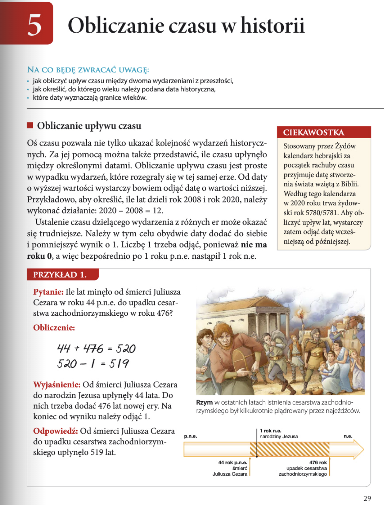
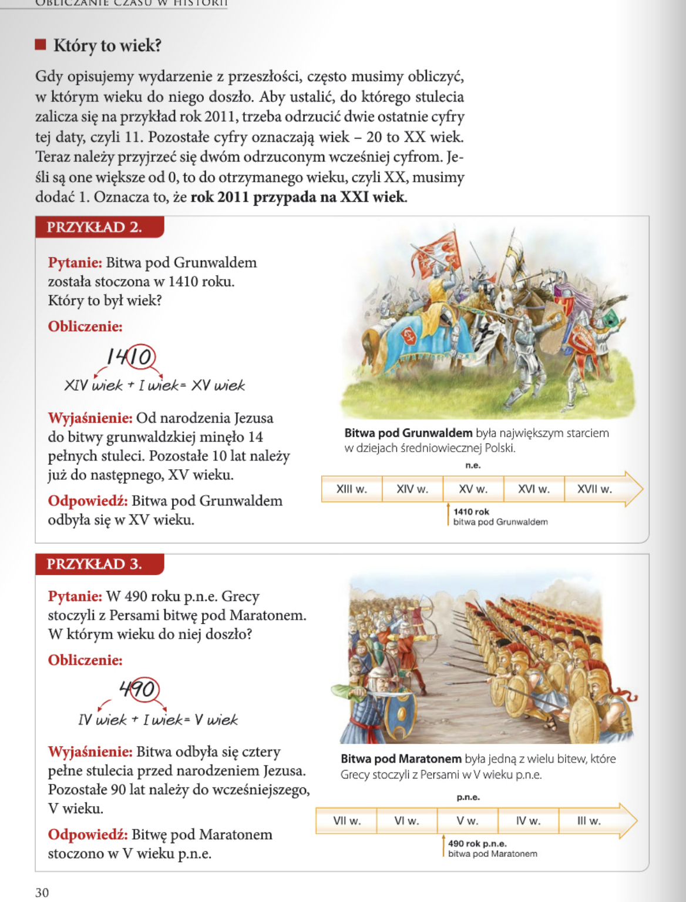
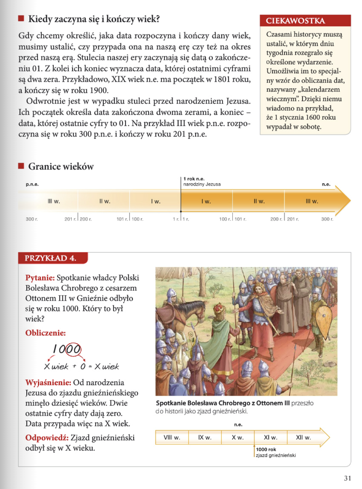
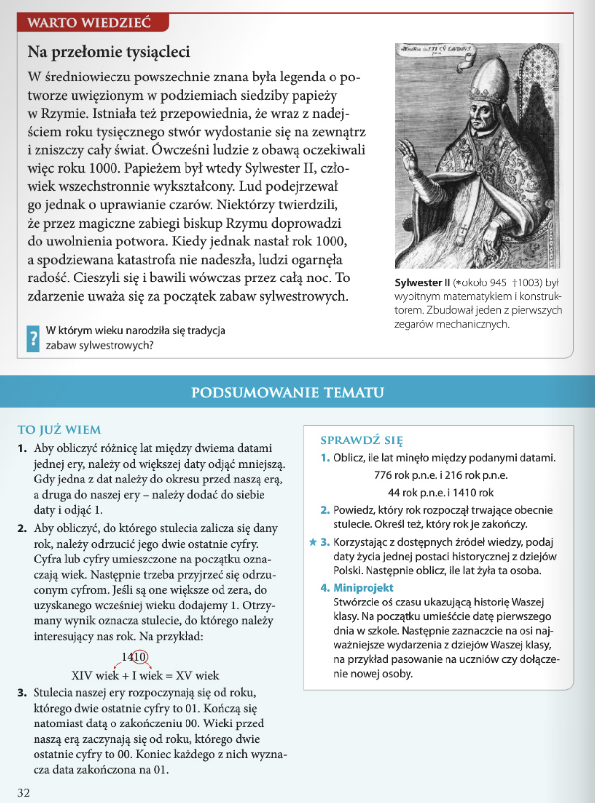

Historia
Rozdział I: Z historią na Ty
5. Obliczanie czasu w historii
- obliczanie upływu czasu między poszczególnymi wydarzeniami;
- określanie, w którym wieku doszło do danego wydarzenia;
- podział czasu na wieki i półwiecza.
Zagadnienia
- jak obliczyć upływ czasu między dwoma wydarzeniami z przeszłości,
- jak określić, do którego wieku należy podana data historyczna,
- które daty wyznaczają granice wieków.
NA CO BEDE ZWRACAĆ UWAGĘ:
lekcja 5 - Obliczanie czasu w historii >>
strona 29

Obliczanie uplywu czasu
Oś czasu pozwala nie tylko ukazać kolejność wydarzeń historycznych. Za jej pomocą można także przedstawiż, ile czasu upłynęło między określonymi datami. Obliczanie upływu czasu jest proste w wypadku wydarzeń, które rozegrały się w tej samej erze. Od daty o wyższej wartości wystarczy bowiem odjąć datę o wartości niższej. Przykładowo, aby określić, ile lat dzieli rok 2008 i rok 2020, należy wykonać działanie: 2020 - 2008 = 12.
Ustalenie czasu dzielącego wydarzenia z różnych er może okazać się trudniejsze. Należy w tym celu obydwie daty dodać do siebie i pomniejszyć wynik o 1. Liczbę 1 trzeba odjąć, ponieważ nie ma roku 0, a więc bezpośrednio po 1 roku p.n.e. nastąpił 1 rok n.e.
CIEKAWOSTKA
Stosowany przez Żydów kalendarz hebrajski za początek rachuby czasu przyjmuje datę stworzenia świata wziętą z Biblii. Według tego kalendarza w 2020 roku trwa żydowski rok 5780/5781. Aby obliczyć upływ lat, wystarczy zatem odjąć datę wcześniejszą od późniejszej.
strona 30
Który to wiek?
Gdy opisujemy wydarzenie z przeszłości, często musimy obliczyć, w którym wieku do niego doszło. Aby ustalić, do którego stulecia zalicza się na przykład rok 2011, trzeba odrzucić dwie ostatnie cyfry tej daty, czyli 11. Pozostałe cyfry oznaczają wiek - 20 to XX wiek. Teraz należy przyjrzeć się dwóm odrzuconym wcześniej cyfrom. Jeśli są one większe od 0, to do otrzymanego wieku, czyli XX, musimy dodać 1. Oznacza to, że rok 2011 przypada na XXI wiek.
PRZYKŁAD 2
Pytanie:
Bitwa pod Grunwaldem została stoczona w 1410 roku. Który to był wiek?
Obliczenie:
1410 r. = XIV wiek + I wiek = XV wiek
Wyjasnienie:
Od narodzenia Jezusa do bitwy grunwaldzkiej minęlo 14 pełnych stuleci. Pozostałe 10 lat należy już do następnego, XV wieku.
Odpowiedź:
Bitwa pod Grunwaldem odbyła się w XV wieku.

strona 31

Kiedy zaczyna sie i konczy wiek?
Gdy chcemy określić, jaka data rozpoczyna i kończy dany wiek, musimy ustalić, czy przypada ona na naszą ere czy też na okres przed naszą erą. Stulecia naszej ery zaczynają się datą o zakończeniu 01. Z kolei ich koniec wyznacza data, której ostatnimi cyframi są dwa zera. Przykładowo, XIX wiek n.e. ma początek w 1801 roku, a kończy się w roku 1900.
Odwrotnie jest w wypadku stuleci przed narodzeniem Jezusa. Ich początek określa data zakończona dwoma zerami, a koniec - data, której ostatnie cyfry to 01. Na przykład III wiek p.n.e. rozpoczyna się w roku 300 p.n.e. i kończy w roku 201 p.n.e.
Czaszmi histirycy muszą ustalić, w którym dniu tygodnia rozegrało się określone wydarzenie. Umożliwa im to specialny wzór do oblicznia dat, nazywany "kalendarzem wiecznym". Dzięki niemu wiadomo na przykład, że 1 stycznia 1600 roku wypadał w sobotę.
strona 32
WARTO WIEDZIEĆ
Na przełomie tysiącleci
W średniowieczu powszechnie znana była legenda o potworze uwięzionym w podziemiach siedziby papieży w Rzymie. Istniała też przepowiednia, że wraz z nadejściem roku tysięcznego stwór wydostanie się na zewnątrz i zniszczy cały świat. Ówcześni ludzie z obawą oczekiwali więc roku 1000. Papieżem był wtedy Sylwester II, człowiek wszechstronnie wykształcony. Lud podejrzewał go jednak o uprawianie czarów. Niektórzy twierdzili, że przez magiczne zabiegi biskup Rzymu doprowadzi do uwolnienia potwora. Kiedy jednak nastał rok 1000, a spodziewana katastrofa nie nadeszła, ludzi ogarnęła radość. Cieszyli się i bawili wówczas przez całą noc. To zdarzenie uważa się za początek zabaw sylwestrowych.
Zadanie
Podaj wiek, w którym początek ma tradycja zabaw sylwestrowych.
X wiek n.e.
Zadanie 1
Dokonaj obliczeń i podaj, ile lat minęło między niniejszymi datami.
776 rok p.n.e. i 216 rok p.n.e.
44 rok p.n.e.i 1410 rok
- 560 lat (776-216).
- 1453 lata (44+1410-1).
Zadanie 2
Zastanów się i podaj rok, który rozpoczął trwające stulecie. Następnie określ, który rok zakończy je.
Rok rozpoczęcia: 2001.
Rok zakończenia: 2100.
Zadanie 3
Za pomocą dostępnych ci źródeł wiedzy, podaj ramy życiowe jednej postaci historycznej z dziejów Polski, po czym oblicz, ile lat ta osoba żyła.
Kazimierz III Wielki urodził się w 1310 roku, zmarł zaś w 1370. Król Polski żył 60 lat.
